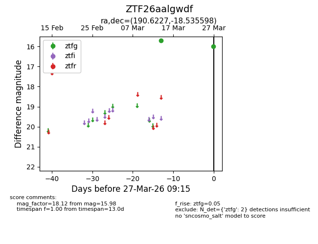
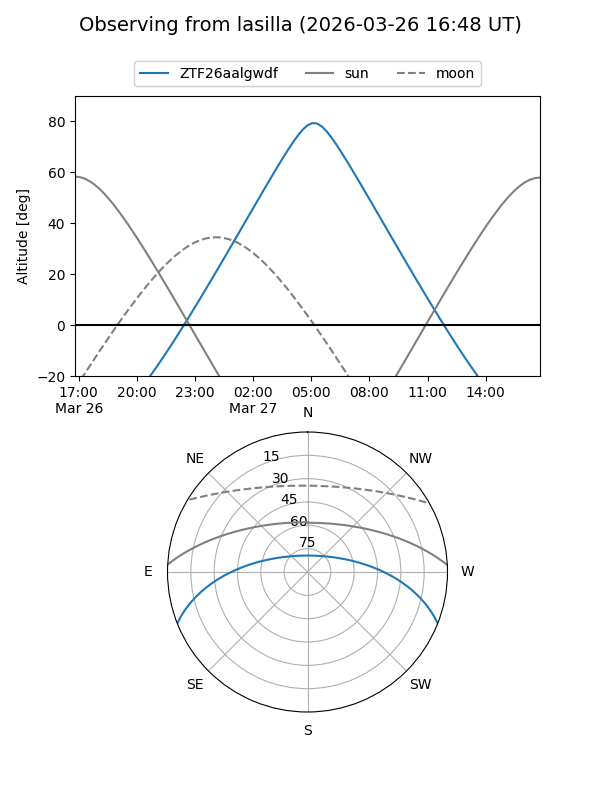
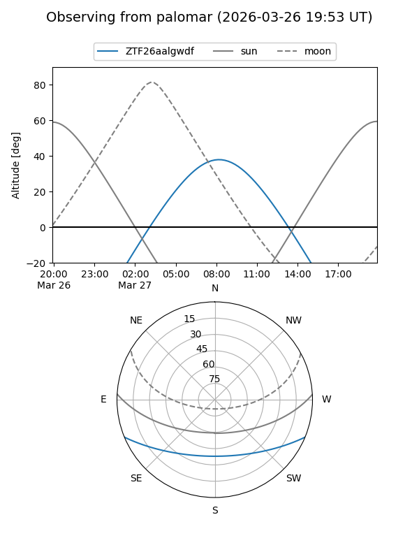

ZTF26aalgwdf
Target ZTF26aalgwdf at 2026-03-27 09:18
Aliases and brokers:
FINK: link
Lasair: link
ALeRCE: link
alt names
ZTF26aalgwdf (ztf,fink_ztf)
Coordinates:
equatorial (ra, dec) = 190.6227,-18.53560
equatorial (HMS+DMS) = 12:42:29.45,-18:32:08.15
galactic (l, b) = (299.9689,+44.28467)
Flags:
Photometry:
last ztfg=15.98
2 ztfg detections
Lightcurve

Visibility


Additional plots